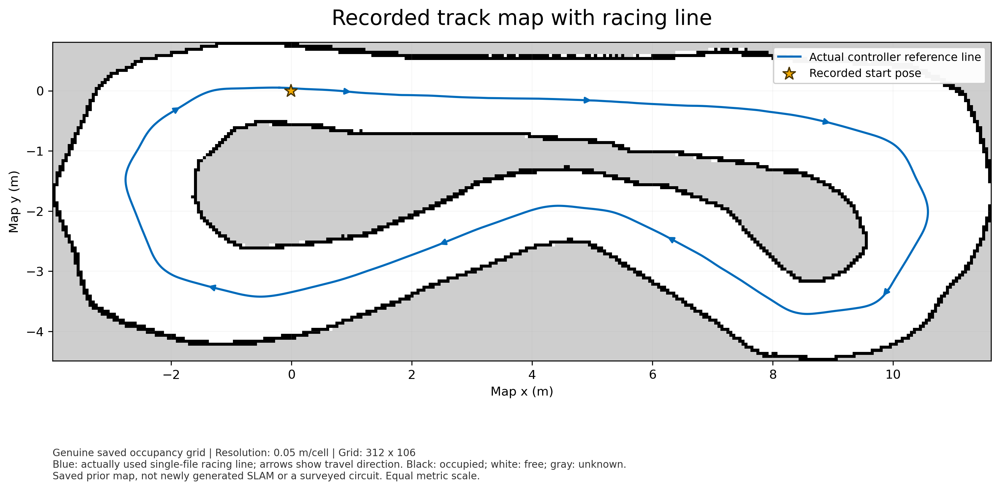

Historical best eligible clean full lap
6.9607 seconds
Five seconds has not been achieved. This is a recorded result from lap 149 of onefile-20261027T085708Z, not the current state of a live run or a guaranteed time on each restart. Its wall-time cross-check was 6.963747 seconds, with zero recorded collisions at that lap.
The preserved follow-up snapshot had 160 simulator laps, 149 eligible clean full laps and zero collisions, while still running. The session subsequently recorded collisions and ended on STOP; the earlier clean-lap evidence is retained, not a claim that the entire final session was collision-free.
Latest downloads
All custom driving logic is in one Python file. Docker, ROS/NumPy/OpenCV images, the unmodified official simulator and genuine saved map/track memory remain external dependencies. The small archive contains only the executable Python file, not those dependencies. Existing machine-specific Windows .lnk shortcuts are intentionally not distributed.
The measured-run source hash and current download hash are both recorded in the provenance file. The latest change fixes Windows startup when the previous simulator PID no longer exists; it does not change the driving controller.
Genuine recorded track map



Use with the existing simulator setup
Windows
- Stop the old run and close its simulator before switching controllers. Do not run the older
RUN_CONTINUOUS.batalongside the one-file mode. - Place the latest
ONEFILE_RACER.pyin the existing Capstone project root, replacing the older copy after keeping a backup. - Use the existing Windows RoboRacer One-File Start shortcut. Use RoboRacer One-File STOP to stop. The repaired shortcuts show startup diagnostics rather than hiding errors in a minimized window.
- The running launcher opens the local STOP/status dashboard at
http://localhost:14999. That address is on your own simulator PC, not this website.
The existing Windows setup requires the Ubuntu WSL distribution, Python, Docker Desktop/Linux ROS dependency image, official project Windows simulator and genuine saved track memory. Downloading this file alone does not install them or create machine-specific shortcuts.
Native Ubuntu
- Use the existing extracted
RoboRacer_Native_Linuxkit. Stop and close its old run. - Extract
ONEFILE_RACER.tar.gzdirectly inside the kit, besidekit-manifest.json. Keep the existing images and evidence/data folders. - Right-click the executable Python file and choose Run as a Program. It creates application-menu RoboRacer One-File Start/STOP entries and starts the new mode.
Native x86_64 Linux, Docker permission, X11/Xwayland authorization and hardware Vulkan are required. Missing hardware Vulkan fails closed rather than silently using Windows or software rendering. Native GPU/UI driving must be validated on the target PC.
Timing, recovery and limits
- Crash-triggered stopping is off by default. Collisions are recorded; impacted laps are ineligible, speed backs off and driving continues. A collision-induced stationary stall may request an official reset.
- Proximity and predictive stopping-speed governors are bypassed. Explicit STOP, stale-data checks, host-liveness lease and an independent heartbeat watchdog remain active. These do not guarantee collision avoidance.
- Eligible full laps require actual simulator finish/time events, a previous finish, sufficient measured travel/coverage and wall-time agreement. Warmup, collision, teleport and flagged tuning-transition laps are rejected.
- Clean full laps from a session that contains another collision are individual-clean-lap results, not an all-clean-session claim.
- No simulator clock, circuit, lap-counter or vehicle-physics changes were used. Adaptive tuning tracks the fastest observed eligible lap; it does not prove a global optimum.
- STOP/fault termination does not blindly rearm. Never use this direct-actuator benchmark on a physical vehicle.
Review the source on GitHub · Review exact lap evidence and artifact hashes